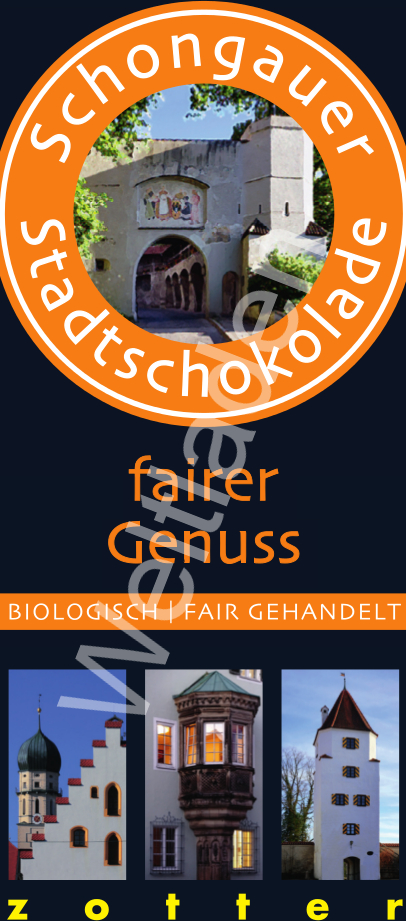
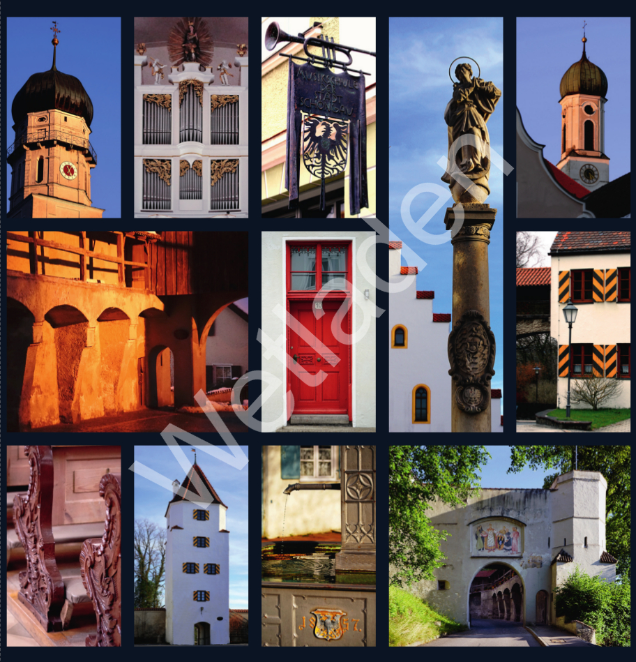
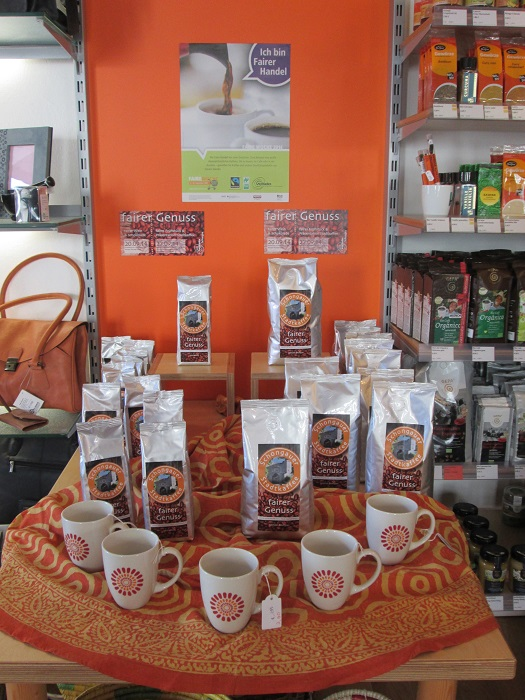

Sortiment

Schongauer Stadtschokolade
Für alle Freunde und Besucher Schongaus bietet unser Weltladen eine ganz besondere Schokolade aus hochprozentigen Edelkakaosorten an:
Ein Schokoladenduo, das aus einer fein duftenden Kaffeetafel und einer cremigen Milchschokolade besteht.
Klar im Geschmack und mit einem Fairtrade-Siegel ausgezeichnet, steht unsere Stadtschokolade für süßen und fairen Genuss.

Schongauer Stadtkaffee
Besondere Kaffeemischung von Kleinbauern in Nicaragua, Äthiopien und Indonesien. 100% Arabica aus kontrolliert ökologischem Anbau und Fairem Handel. Eine schonende Langzeitröstung macht diesen Kaffee besonders verträglich.
Der Stadtkaffee schmeckt Schongauern wie Besuchern der schönen Lechstadt gleichermaßen gut und entfaltet seine ganze Bandbreite an Aromen bei 80°C heißem Wasser.
250g gemahlen
500g Bohne